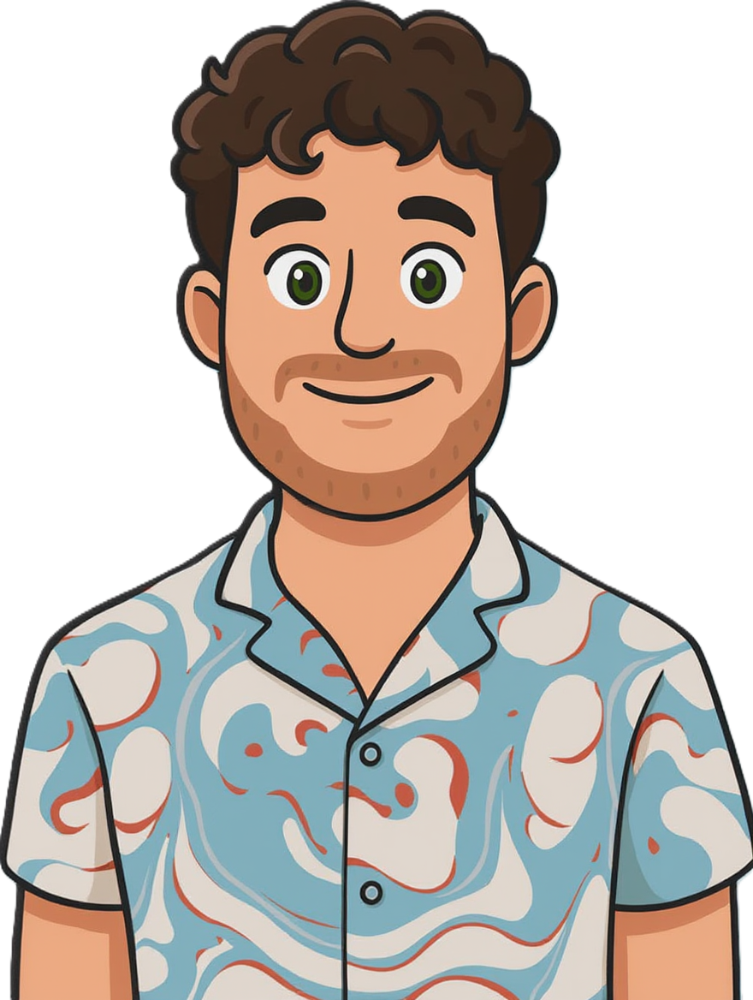

Moe die niet weggaat
Vakantie helpt niet meer. Slapen helpt niet meer. Je wordt moe wakker — en dat is al maanden zo.
Psychosomatische fysiotherapie · Den Bosch
Ik werk met mensen die al langer zoeken. Chronische pijn, vermoeidheid, hyperventilatie, een zenuwstelsel dat niet meer uitzet — en een stapel verwijzingen die niks oploste. Dit is waar we beginnen.

Vakantie helpt niet meer. Slapen helpt niet meer. Je wordt moe wakker — en dat is al maanden zo.
Rug, nek, hoofd, ergens. Scans laten niks zien. Iedereen zegt dat er niks aan de hand is — behalve je lijf.
Je betrapt jezelf op oppervlakkig ademen, benauwdheid, duizeligheid. Soms midden in een vergadering.
Gepieker op bed, te alert, schrikken van kleine dingen. Een zenuwstelsel dat 'aan' blijft staan.
Huisarts, fysio, misschien psycholoog. Elk stukje is onderzocht. Niemand keek naar het geheel.
Je bent niet meer wie je was. Dat is geen lichamelijke klacht — maar wel degelijk onderdeel van het verhaal.
 Stap 01
Stap 01
Waar we beginnen
We nemen een uur. Ik vraag door. Wanneer begon het? Wat ging er vooraf? Welke dokters, welke adviezen, welke hypotheses? Ik lees je dossier niet af — we zoeken samen het verhaal dat ontbreekt.
Aan het eind van die eerste sessie heb je meestal twee dingen: een werkhypothese waar je zelf iets bij voelt, en één oefening om mee te nemen.
Stap 02
Wat we oefenen
Veel mensen onderschatten hun adem. Totdat ze merken dat twee minuten bewust uitademen het verschil is tussen paniek en rust. We bouwen dat op, met oefeningen die je thuis, op kantoor, in bed kunt doen.
Dit is geen ademhalingscursus. Dit is je zenuwstelsel opnieuw leren kennen — en voelen dat je er zelf invloed op hebt.
Stap 03
Hoe het verder gaat
Ik werk niet in weken of pakketten. Sommigen zien we vier keer en ze zijn weg. Anderen komen een half jaar. Wat we elke keer doen: kijken wat er veranderd is, wat bleef, en waar de volgende kleine beweging zit.
Altijd lichaam en hoofd samen. Altijd met iets concreets voor thuis. Nooit de suggestie dat het "tussen je oren" zit.
Gratis · Begin hier
Vijf oefeningen die ik zelf in de eerste week introduceer. Geen fluff, geen verkoop daarna. Gewoon het document waarin ik alles zet wat je nú zou kunnen proberen.
Als je daarna wilt praten, weet je me te vinden. Doe je dat niet — ook goed. Deze vijf oefeningen zijn sowieso van jou.
Altijd gratis · uitschrijven in één klik · nooit doorgegeven
Ervaringen
Ik leerde mijn grenzen bewaken op werk. Nu heb ik weer energie over voor thuis.
Erik · 28Spanning & vermoeidheidHet hield me letterlijk en figuurlijk in beweging tijdens een zware periode.
Annemarie · 25Pijn + GGZ-wachtlijstIk dacht dat ik gek werd. Het hielp zó om te horen dat mijn lijf precies deed wat het hoort te doen — alleen al veel te lang.
Anoniem · 34Chronische hoofdpijnGeen quick fix. Wel iemand die naast me ging zitten in plaats van tegenover me.
Sanne · 41Burn-out, tweede keerDe combinatie van fysieke oefeningen en ruimte voor mijn verdriet was precies wat ik nodig had.
Frank · 72Rouwverwerking & rugklachtenNu slaap ik weer beter en voel ik me minder gespannen, op het werk en thuis.
Bas · 35Stress & slaapSessies
45–60 minuten. Gesprek, onderzoek, concrete oefeningen. Je gaat naar huis met iets om mee te nemen — nooit alleen huiswerk-bestanden.
Gesprek, ademhalings- en ontspanningswerk werken prima via video. Hands-on onderzoek nodig? Dat bespreken we in de intake.
Veelgestelde vragen
Staat je vraag er niet bij? Mail gerust. Ik antwoord meestal binnen een werkdag.